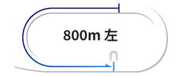
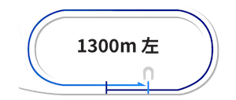
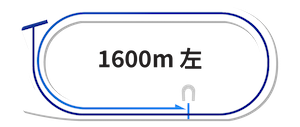
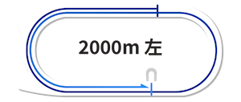

浦和競馬場コース解説
荒川沿いの風景が美しい浦和競馬場の詳細なコース分析
浦和競馬場

コースデータ
- 回り：左回り
- フルゲート：12頭
- 1周距離：1,200m
- 直線：220m
- 幅員：21.5m〜16m
浦和800m
向正面の2コーナー付近から発走する短距離戦。直線部分を最大限に活用した序盤のポジション争いが重要で、出遅れは致命的となる。内側の枠番で出足が鈍ると、外側の馬に進路を塞がれ、巻き返しは非常に困難。スタートダッシュの良し悪しが結果を左右する、典型的なスプリント戦といえる。
浦和1300m
スタンド前中央付近から発走。最初のコーナーまでが近いため、内側の枠番が有利に働く傾向が強い。流れは比較的穏やかになりやすく、前に位置できるかどうかが重要なポイント。主に下級クラスで施行されるが、この距離に特化した適性を持つ馬が存在することも特徴的。過去の距離別成績を確認することが予想の参考になる。
浦和1400m
4コーナー付近、直線の入口付近が発走地点。直線全体を活用してポジション取りが可能で、外側の枠番の馬は内を確認しながら走れる利点がある。内側の枠番はスタートが重要で、出遅れると包まれるリスクがある。流れは速くなる傾向があり、差し脚も効きやすい条件。交流重賞から一般競走まで幅広く使用される、浦和競馬場の主要距離である。

浦和1500m
4コーナー後方のポケット地点から発走。約100m進むと緩やかなカーブに入るため、内側の馬はやや制約を受けることがある。2007年に設定された比較的新しい距離で、定員は1400mと同様の12頭。1400mより特殊性は低いが、1600mほど極端でもない、バランスの取れたコース設定。

浦和1600m
3コーナーと4コーナーの中間にあるポケットから発走。スタート直後にカーブを迎える、国内でも珍しい特殊なコース形態。この構造により内側の枠番が圧倒的に有利で、外側からの先行は相当なスピードがないと困難。特に逃げ・先行型の馬が外枠に入った場合は大きなハンデとなる。かつては桜花賞が行われていたが、現在は使用されていない。
浦和1900m
向正面の中央付近が発走地点。3コーナーまでの間隔が短いため内側が有利だが、長距離戦で流れが緩むため外枠からでも前に行ける。特筆すべきは6つのコーナーを回ることで、高い操縦性と持続力が要求される。現在は使用されていない。

浦和2000m
1900mと同じく6回のコーナーを通過するが、800mと同位置からのスタートで最初のコーナーまで余裕があるため枠順の影響は小さい。コーナーワークの巧拙は重要だが、この長距離では最終的に総合力の差が明確に表れる。後方一気の決着が少ないのも、実力差がはっきり出やすいコース特性による。
